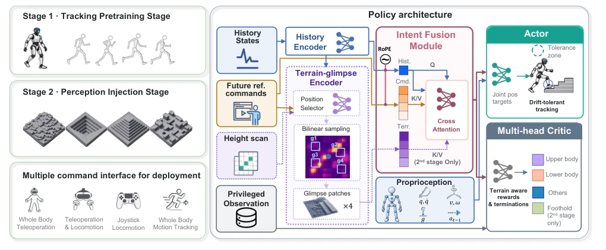
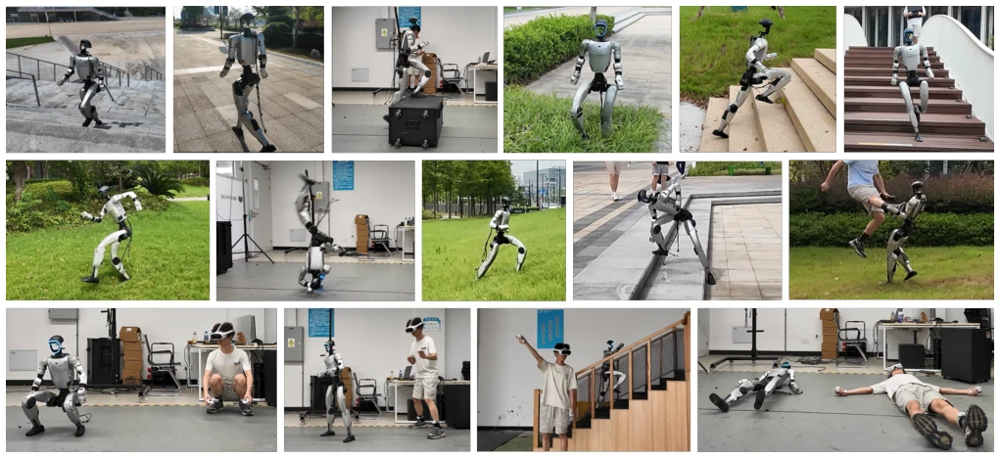
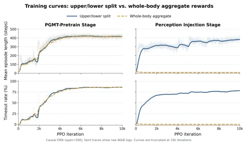
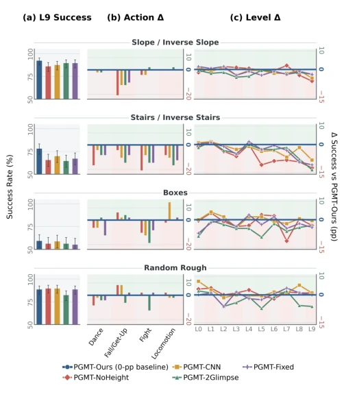
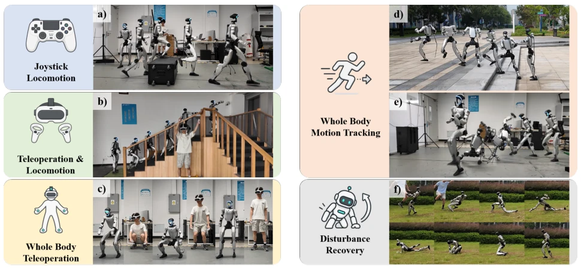

PGMT serves as "terrain glasses" for humanoid robots with slippery soles. It does not rely on pre-generated terrain-matching trajectories, but enables the policy to learn how to "see the road and step" on its own. The two-stage training is quite clever, training on flat ground first then injecting perception, saving the trouble of paired data. However, one should not be too optimistic; it only recognizes elevation maps and cannot distinguish "steppable stones" from "boxes to move". The lack of semantics makes it fall short of general interaction. However, it can perform 37cm steps zero-shot on Unitree G1, and this deployment capability is indeed superior to pure simulation. Compared to methods requiring intermediate reference generators, PGMT is more direct, but the cost is increased training complexity and sensitivity to perception noise. It demonstrates that perception can be decoupled from reference trajectories, but has not yet solved the problem of "understanding the environment".
Existing full-body motion trackers [1], [2], [10] perform excellently on flat ground, but fail on complex terrain because terrain-agnostic reference trajectories are physically infeasible. Although some work attempts to construct terrain-adaptive references [3], [4], [7], this relies on the quality of the intermediate stage and is difficult to scale to large-scale data. Directly learning the mapping between motion intent and terrain constraints is the correct approach; otherwise, robots can only walk on "flat roads" forever. Especially in teleoperation scenarios, operators cannot predict foot geometry, requiring bottom-level strategies to adapt autonomously. The lack of large-scale paired data is the main bottleneck; PGMT attempts to bypass this limitation by learning from independent motion and terrain data.
The core is a two-stage Pipeline. Stage 1 involves pre-training on flat ground, using the Intent Fusion Module (IFM) to fuse proprioception and reference frames, with a multi-head Critic evaluating upper and lower body rewards separately. Stage 2 injects perception; the Terrain-Glimpse Encoder dynamically selects 4 terrain Patches to encode based on motion intent, injecting them into the IFM's Key/Value. The key innovation is "Terrain-aware tracking relaxation", which allows the lower body to deviate from the reference on complex terrain while the upper body maintains intent. Additionally, global position correction prevents cumulative error, and a multi-stage Curriculum gradually increases terrain difficulty. This design avoids retraining the entire strategy, achieving incremental injection of perception capabilities. The IFM uses RoPE and CrossAttn to process temporal information, and the Critic is expanded to four heads to evaluate terrain contact rewards, ensuring contact stability.

Fig. 2: Overview of PGMT. PGMT is trained in two stages: a Tracking Pretraining Stage that establishes a general whole- body motion tracking and recovery prior, followed by a Perception Injection Stage that selectively fuses local geometry with motion intent, enabling terrain adaptation without terrain-matched reference trajectories. The resulting unified policy supports terrain-adaptive locomotion, whole-body motion tracking, and multiple teleoperation interfaces.
Simulation covers 5 terrain types and 10 difficulty levels; PGMT achieves a completion rate of 87.81%, with 83.33% on L9 difficulty, far exceeding RGMT and SONIC. Zero-shot deployment on the physical Unitree G1 supports jumping, obstacle crossing, and fall recovery. Ablation studies prove that dynamic Glimpse is superior to fixed or CNN encoding, and multi-head Critic is more conducive to convergence after perception injection than single-head. This demonstrates the effectiveness of perception and motion decoupling. It performs robustly on grass and stairs, demonstrating zero-shot transfer capability. It supports multiple control modes, such as teleoperation and dynamic tracking.

Fig. 1: PGMT robustly executes whole-body motions across diverse real-world environments, from structured indoor settings to stairs, uneven outdoor terrain, and dense vegetation. The same policy accommodates motion references from multiple command sources, providing a unified interface for perceptive whole-body locomotion and tracking.

Fig. 4: Split- and aggregate-return critics. Both learn during Tracking Pretraining, but only the split-return critic progresses during Perception Injection. Curves show causal EMAs of the raw logs, truncated at 10k PPO iterations.

Fig. 3: Terrain-perception ablations. (a) L9 success with Wilson 95% intervals. (b) L9 motion-group success differ- ences from PGMT-Ours (48 episodes per bar). (c) Success differences from PGMT-Ours across L0–L9.

Fig. 5: Unified real-world control with PGMT. A single unified PGMT policy supports diverse command sources and control modes, including (a) joystick locomotion, (b) teleoperated locomotion, (c) whole-body teleoperation, (d-e) whole- body motion tracking, and (f) disturbance recovery. Locomotion commands are given through Unitree or PICO joystick. All behaviors are executed by the same policy without policy switching. body return. The split-return critic uses a shared backbone and separate heads to estimate the returns associated with the upper-body, lower-body, and auxiliary reward groups. As shown in Figure 4, both critics successfully learn the terrain- agnostic motion-tracking policy during the Tracking Pretrain- ing Stage, achieving comparable mean episode lengths and timeout rates. O